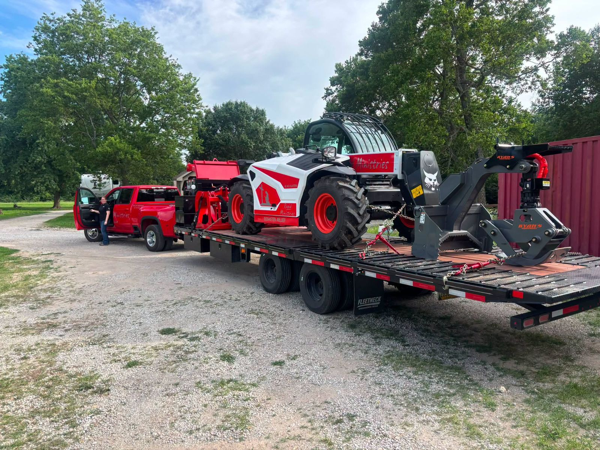

Our story
A family, a truck, and a calling.
God put it on our hearts to go and serve people in the hardest moments after a disaster. So we made it our full-time work, living on the road and following the need from one community to the next.
- Answering the callWe began traveling the country to help with tree removal, cleanup, and repairs.
- 2022: A game-changerBy God's provision, we bought a skid loader, and it multiplied the work we can do on every site.
- What's nextWe're praying to bring more heavy equipment and more skilled volunteers to every disaster zone we serve.